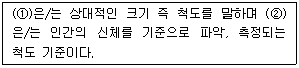
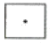
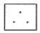
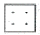
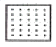
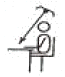
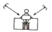
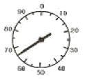
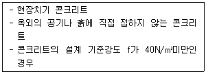

실내건축산업기사 (2007-05-13 기출문제)
1과목: 실내디자인론
1. 데 스틸(De Still) 운동의 색채와 면 구성을 적용하여 리트벨트(Rietveld)가 디자인한 의자의 이름은?
- 매킨토시 체어(Mackintosh Chair)
- 몬드리안 체어(Mondrian Chair)
- 블랙 앤 화이트 체어(Black and White Chair
- 레드 앤 블루 체어(Red and Blue Chair)
(정답률: 70%)

2. 질감에 대한 설명 중 옳지 않은 것은?
- 질감의 선택 시 고려해야 할 사항은 스케일, 빛의 반사 와 흡수, 촉감 등의 요소이다.
- 질감은 만져서만 느껴지는 디자인 요소이다.
- 유리, 거울 같은 재료는 높은 반사율을 나타내며 차갑게 느껴진다.
- 질감은 실내디자인을 통일시키거나 파괴할 수도 있는 중요한 디자인 요소이다.
(정답률: 94%)
3. 다음의 ( )안에 들어갈 용어로 알맞은 것은?

- ① 모듈, ② 스케일
- ① 스케일, ② 휴먼 스케일
- ① 모듈, ② 그리드
- ① 그리드, ② 황금비
(정답률: 91%)
4. 다음 중 실내 디자인의 레이아웃(Layout)단계에서 고려해야 할 내용과 가장 거리가 먼 것은?
- 출입형식 및 동선 체계
- 인체공학적 치수와 가구의 크기
- 바닥, 벽, 천장의 치수 및 색채 선정
- 공간간의 상호 연계성
(정답률: 54%)
5. 다음 공간의 분류에 있어 잘못 연결된 것은?
- 주거공간 – 아파트
- 사무공간 – 은행
- 상업공간 – 쇼룸
- 전시공간 – 박물관
(정답률: 알수없음)
6. 실내디자인 과정(Process)을 바르게 나열한 것은?
- 분석→조사→목표설정→종합→결정
- 목표설정→조사→분석→종합→결정
- 조사→분석→결정→종합→목표설정
- 목표설정→분석→종합→조사→결정
(정답률: 83%)
7. 부엌 작업대의 배치유형 중 일렬형에 대한 설명으로 옳지 않은 것은?
- 부엌의 폭이 좁거나 공간의 여유가 없는 소규모 주택에 적합하다.
- 작업대가 길어지면, 작업 동선이 길게 되어 비효율적이 된다.
- 작업대 전체의 길이는 3500~4000mm 정도가 가장 적당하다.
- 작업대를 벽면에 한 줄로 붙여 배치하는 유형이다.
(정답률: 알수없음)
8. 다음 중 실내계획조겅네서 일지적 조건에 해당되지 않는 것은?
- 방위
- 도로관계
- 일조조건
- 건물의 규모
(정답률: 55%)
9. 대칭은 좌우대칭과 방사대칭으로 나눌 수 있다. 방사대칭의 예가 아닌 것은?
- 눈의 결정체
- 피르테론 진전
- 붉은 장미꽃
- 비치파라솔
(정답률: 알수없음)
10. 다음 중 실내디자이너의 역할과 가장 관계가 먼 것은?
- 실내공간을 설계하는 디자이너
- 생활공간에 필요한 기구, 장식품과 같은 실내요소를 설계하는 디자이너
- 생활공간에 필요한 그래픽을 기획 설계하는 디자이너
- 생활공간을 보다 밀도 있게 구성하기 위해 치장, 장식작업하는 디자이너
(정답률: 알수없음)
11. 필요에 따라 가구의 형태를 변화시킬 수 있어 고정적이면서 이동적인 성격을 갖는 가구로, 규격화된 단일가구를 원하는 형태로 조합하여 사용할 수 있으므로 다목적으로 사용이 가능한 것은?
- 붙박이가구
- 유닛가구
- 가등가구
- 언목가구
(정답률: 알수없음)
12. 날개의 각도를 조절하여 일광, 조망, 시각의 차단정도를 조정하는 창가리개는?
- 드레이퍼리
- 블라인드
- 커텐
- 케이스먼트
(정답률: 73%)
13. 실내디자인에 대한 설명으로 올바르지 않은 것은?
- 실내디자인은 이용자특성에 대한 제약을 벗어나 공간 예술 창조의 자유가 보장되어야 한다.
- 효율적인 공간창출을 위하여 제반요소에 대한 분석작업이 우선되어야 한다.
- 인간의 활동을 도와주며, 동시에 미적인 만족을 주는 환경을 창조한다.
- 건축 및 환경과의 상호성을 고려하여 계획하여야 한다.
(정답률: 알수없음)
14. 다음 중 주택의 거실에 대한 설명으로 옳지 않은 것은?
- 거실의 기능은 각 가족의 생활주기와 생활양식에 따라, 또 주택의 규모나 방의 수에 따라 다르다.
- 거실은 실내의 다른 공간과 유기적으로 연결될 수 있도록 하되 거실이 통로화 되지 않도록 주의해야 한다.
- 거실의 평면은 정사각형보다 한 변이 너무 짧지 않은 직사각형이 가구배치와 TV시청에 효과적이다.
- 거실의 면적은 일률적으로 규정하기 어려우나 일반적으로 가족 1인당 1~2m2정도로 계획하는 것이 가장 바람직하다.
(정답률: 알수없음)
15. 다음 중 조화에 대한 설명으로 가장 알맞은 것은?
- 전체 성질이 다른 요소를 동시 공간에 배열하는 것이다.
- 전체적인 조립 방법이 모순 없이 질서를 잡는 것이다.
- 규칙적인 요소들의 반복으로 다지안에 시각적인 질서를 부여하는 동제된 운동감각을 의미한다.
- 어떠한 요소가 일정한 간격으로 되풀이 되는 현상을 말하는 것이다.
(정답률: 알수없음)
16. 실내디자인의 내부마감 중 표면처리에 대한 설명으로 옳지 않은 것은?
- 표면이 가치를 향상시킨다.
- 시각적 아름다움을 더하기 위한 것이다.
- 3차원적인 공간 장식이다.
- 재료, 형태, 모양과 조화되어야 한다.
(정답률: 55%)
17. 주거공간의 주행 등에 따른 분류 중 사회적 공간에 속하지 않는 것은?
- 거실
- 응접실
- 식당
- 서재
(정답률: 74%)
18. 다음 그림 중 집중효과가 가장 큰 것은?




(정답률: 92%)
19. 아일랜드형 부엌에 대한 설명으로 옳지 않은 것은?
- 부엌의 작업대가 식당이나 거실 등으로 개방된 형태의 부엌이다.
- 가족 구성원 모두가 부엌일에 참여하는 것을 유도할 수 있다.
- 부엌의 크기에 관계없이 적용 가능하다.
- 개방성이 큰 만큼 부엌의 청결과 유지관리가 중요하다.
(정답률: 알수없음)
20. 다음 중 두 공강늘 상징적으로 분리, 구분하는 상징적 경계를 나타내는 것은?
- 60cm 높이의 벽이나 담장
- 120cm 높이의 벽이나 담장
- 150cm 높이의 벽이나 담장
- 180cm 높이의 벽이나 담장
(정답률: 알수없음)
2과목: 색채 및 인간공학
21. 다음 그림 중 조명의 위치로 가장 적절한 것은?


(정답률: 알수없음)
22. pictorial graphics에서 “금지”를 나타내는 형태에 해당되는 것은?
- 삼각형으로 표시
- 다이어몬드형으로 표시
- 사각형으로 표시
- 대각선으로 표시
(정답률: 알수없음)
23. 다음 가동지침형(可動指針型) 계가관 중 가장 효과적인 것은?

(정답률: 알수없음)
24. 다음 중 일반적으로 피부의 단위면적당 분포 신경의 수가 많은 것부터 적은 순서대로 나열된 것은?
- 통점 ＞ 압점 ＞ 냉점 ＞ 온점
- 압점 ＞ 통점 ＞ 온점 ＞ 냉점
- 냉점 ＞ 온점 ＞ 통점 ＞ 압점
- 온점 ＞ 냉점 ＞ 압점 ＞ 통점
(정답률: 64%)
25. 자극이 중지된 후에도 잠시 동안 자극 표현을 지속하는 암시 저장 메커니즘이 있는 것과 관련된 것은?
- 인식(recognition)
- 감각보관(sensory storage)
- 작업기억(work memory)
- 학습연상(scholarship association)
(정답률: 70%)
26. 다음 중 허리높이에 대한 설명으로 가장 적당한 것은?
- 직립자세에서 지면과 배꼽 3cm 까지의 수직거리
- 직립자세에서 지면과 팔꿈치아래점까지의 수직거리
- 직립자세에서 지면과 손에 쥔 지름 2cm 막대의 축선까지의 수직거리
- 직립자세에서 지면과 몸통의 오른쪽 옆 윤곽선에서 가장 들어간 곳까지의 수직거리
(정답률: 68%)
27. 다음 중 소리에 관한 설명으로 틀린 것은?
- 반사시 입사각과 반사각은 동일하다.
- 굴절현상시 진동수는 변함없다.
- 저주파일수록 회절이 많이 발생한다.
- 은폐(masking)효과는 은폐음과 피음폐음의 종류와 무관하다.
(정답률: 24%)
28. 다음 중 1000Hz의 진동수를 기준음으로 하는 것과 관련이 없는 것은?
- bel(벨)
- phon(폰)
- sone(손)
- octave(옥타브)
(정답률: 알수없음)
29. 다음 중 눈부심(glare)의 처리방법으로 잘못된 것은?
- 광원의 세기를 줄이고 수를 늘린다.
- 광원의 휘도를 줄인다.
- 광원 주위를 어둡게 하여 대비 효과를 높인다.
- 가리개나 차양 등의 간접조명을 사용한다.
(정답률: 알수없음)
30. 집단작업을 할 경우 조도분포를 같은 모양으로 하여 시야의 밝기를 동일하게 하는 조명은?
- 국부조명
- 부분조명
- 전반조명
- 간접조명
(정답률: 알수없음)
31. 문ㆍ스펜서의 색채조화론 중 부조화 영역의 종류가 아닌 것은?
- 제1부조화
- 제2부조화
- 제3부조화
- 눈부심
(정답률: 알수없음)
32. 눈으로 들어오는 빛을 망막에 정확하고 깨끗하게 초점을 맞도록 조절하는 것은?
- 홍채
- 수정체
- 글라스체
- 시신경
(정답률: 24%)
33. 오스트발트 색상환에서 보색관계가 잘못된 것은?
- Y-UB
- R-SG
- O-T
- P-GY
(정답률: 알수없음)
34. 작은 점들이 무수히 많이 있는 그림을 멀리서 보면 색이 혼색되어 보이는 현상은?
- 가법 혼색
- 감법 혼색
- 병치 혼색
- 제시 혼색
(정답률: 60%)
35. 올림픽 마크의 오륜이 상징하는 색과 대륙의 연결이 바른 것은?
- 청색은 아메리카
- 적색은 오스트레일리아
- 녹색은 유럽
- 황색은 아시아
(정답률: 알수없음)
36. 베즐드 효과와 관련이 있는 것은?
- 색의 대비
- 동화현상
- 연상과 상징
- 게시대비
(정답률: 64%)
37. 상품에 있어서 색의 역할과 가장 거리가 먼 것은?
- 사람의 시선을 끌고 손님을 정착시키는데 큰 역할을 한다.
- 상품에 대한 이미지를 전달한다.
- 소비자에게 상품을 기호에 따라 쉽게 선택할 수 있게 한다.
- 분산 효과를 주어 부드럽게 분위기를 높인다.
(정답률: 알수없음)
38. 물체에서 반사광의 분광특성이 변화되어도 거의 같은 색으로 보이는 현상은/
- 항상성
- 연색성
- 명순응
- 동화현상
(정답률: 40%)
39. 선호색에 대한 설명 중 틀린 것은?
- 유아와 아동은 밝은 파스텔 톤의 색상을 선호한다.
- 남성 성인의 경우 보편적으로 파랑 계통의 색채를 선호한다.
- 보편적으로 사회적인 지위가 높을수록 차분한 색을 선호한다.
- 색에 대한 일반적인 선호 경향과 특정 제품에 대한 선호색은 다른 경우가 많다.
(정답률: 알수없음)
40. 다음 중 진출성이 가장 강한 색은?
- 주황
- 청록
- 파랑
- 백색
(정답률: 알수없음)
3과목: 건축재료
41. 다음의 인조석에 대한 설명 중 옳지 않은 것은?
- 테리조는 사문암, 화강암 등의 쇄석을 중석으로 하여 조강포블랜드시멘트를 사용하여 만든 것이다.
- 결합재료는 시멘트 대신에 합성수지를 사용하는 것도 있다.
- 인조석은 종석의 종류에 따라 테라조와 의석으로 나눌 수 있다.
- 의석은 일종의 모조석이라고 볼 수 있다.
(정답률: 21%)
42. 목재의 성질에 대한 설명 중 틀린 것은?
- 볼에 타는 단점이 있으나 열전도도가 낮아 여러 가지 보온재료로 사용된다.
- 함수율이 1% 증가하면 열전도율은 2% 감소한다.
- 비중이 클수록 전기전도율도 증가한다.
- 섬유방향에 따라 전기전도율은 다르며 측방향이 최대이고 반경방향이 최소이다.
(정답률: 알수없음)
43. 다음과 각층 유리의 성질에 대한 설명 중 틀린 것은?
- 유리블록은 실내의 냉난방에 효과가 있으며 보통 유리창보다 균일한 확산광을 얻을 수 있다.
- 열선반사유리는 단열유리라고도 불리우며 태양광선 중 장파부분을 흡수한다.
- 자외선차단유리는 자외선의 화학작용을 방지할 목적으로 의류품의 진열창, 식품이나 약품의 창고 등에 쓴다.
- 내열유리는 규산분이 많은 유리로서 성분은 석영유리에 가깝다.
(정답률: 46%)
44. 다음 중 점토의 성질에 대한 설명으로 틀린 것은?
- 양질의 점토는 습윤 상태에서 현저한 가소성을 나타낸다.
- 점토는 수성암에서만 생성된다.
- 점토의 주성분은 실리카와 알루미나이다.
- 점토의 압축강도는 인장강도의 약 5배 정도이다.
(정답률: 알수없음)
45. 다음 중 목재의 방부제로 사용되지 않는 것은?
- 페놀프탈레인
- 크레오스트 오일
- 아스팔트
- 클타르
(정답률: 알수없음)
46. 감람석 또는 섬록암이 변질된 것으로 색조는 암록색 바탕에 흑백색의 아름다운 무늬가 있고, 경질이나 풍화성이 있어 외벽보다는 실내장식용으로 사용되는 석재는?
- 사문암
- 대리선
- 트래버린
- 점판암
(정답률: 알수없음)
47. 콘크리트 혼화재료인 플라이애시가 콘크리트에 미치는 작용에 대한 설명 중 옳지 않은 것은?
- 콘크리트 수화초기시의 따라 알칼리성을 감소시켜 초기 강도를 증진시키는 효과가 있다.
- 수산화칼슘과 반응함에 따라 알칼리성을 감소시켜 저알칼리시멘트의 효과를 나타낸다.
- 알칼리골재반응에 의한 팽창을 억제하고, 해수 중의 황산염에 대한 저항성을 높인다.
- 공극충전효과로 콘크리트의 수밀성을 향상시킨다.
(정답률: 30%)
48. 다음 합성수지 중 열경화성 수지가 아닌 것은?
- 페놀수지
- 아크릴수지
- 멜라민수지
- 요소수지
(정답률: 42%)
49. 플라스틱 재료의 일반적 성질에 대한 설명으로 틀린 것은?
- 플라스틱의 강도는 석재와 비슷하여 인장강도가 압축강도보다 매우 크다.
- 플라스틱은 상호간 계면점착이 잘되며 금속, 콘크리트, 목재, 유리 등 다른 재료에도 잘 부착된다.
- 플라스틱은 일반적으로 전기절연성이 양호하다.
- 플라스틱은 열에 의한 팽창 및 수축이 크다.
(정답률: 알수없음)
50. 다음 중 구리(Cu)와 주석(Sn)을 주체로 한 합금으로 주조성이 우수하고 내식성이 크며 건축장식철을 또는 미술공예재료에 사용되는 것은?
- 청동
- 활동
- 양백
- 듀탈부민
(정답률: 알수없음)
51. 콘크리트구조물의 크리프(Creep) 현상에 대한 설명 중 옳지 않은 것은?
- 작용응력이 클수록 크리프는 크다.
- 클시멘트비가 클수록 크리프는 크다.
- 재하지령이 빠를수록 크리프는 크다.
- 재하중의 건조진행과 구조부재의 치수는 크리프와 관계가 없다.
(정답률: 알수없음)
52. 기본 점성이 크며 내수성, 내약품성, 전기절연성이 모두 우수한 만능형 접착제로 금속, 플라스틱, 도자기, 유리, 콘크리트 등의 접합에 사용되며 내구력도 큰 합성수지계 접착제는?
- 에폭시수지 접착제
- 네오프렌
- 요소수지 접착제
- 페놀수지 접착제
(정답률: 알수없음)
53. 금속의 성질에 관한 설명 중 옳은 것은?
- 가의 담금질은 강을 연화하거나 내부응력을 제거할 목적으로 실시한다.
- 동은 건조한 공기 중에서 산화되어 염기성 탄산동이 되나, 알칼리에 대한 저항성은 크다.
- 알루미늄은 산이나 해수에 침식되므로 해안이나 콘크리트에 접하는 장소에서는 사용하지 않는다.
- 납은 융점이 높이 가공은 어려우나 내식성이 우수하고 방사선의 투과도가 낮아 건축에서 방사선 차폐용 벽체에 이용 된다.
(정답률: 34%)
54. 벽, 기둥 등의 모서리 부분에 미장바름을 보호하기 위하여 사용하는 금속제품은?
- 줄눈대
- 코너비드
- 조이너
- 논슬립
(정답률: 알수없음)
55. 다음의 점토제품에 대한 설명 중 옳은 것은?
- 자기질 타일은 흡수율이 매우 작다.
- 테라코타는 주로 구조재로 사용된다.
- 내화벽돌은 돌을 분쇄하여 소성한 것으로 점토제품에 속하지 않는다.
- 소성벽돌이 붉은색을 띠는 것은 안료를 넣었기 때문이다.
(정답률: 알수없음)
56. 다음의 보통 포틀랜드시멘트의 성질에 관한 설명 중 옳지 않은 것은?
- 시멘트의 분말도가 수화속도에 큰 영향을 준다.
- 시멘트의 분말도가 놓으면 응결, 정화 속도가 빠르다.
- 혼합용수가 많으면, 응결, 정화가 느리다.
- 온도와 습도가 높으면 응결시간이 느리며 정화가 지연된다.
(정답률: 19%)
57. 다음 중 사용용도에 따른 콘크리트용 혼화재료의 종류가 옳지 않은 것은?
- 작업성능이나 동결융해 저항성능의 향상 : AE제
- 강력한 강수효과를 이용한 유통성의 대폭적인 개선 : 유동화제
- 검성, 응집작용 등을 향상시켜 재료분리를 억제 : 종검제
- 염화물에 의한 강재의 부식을 억제 : 기포제
(정답률: 50%)
58. 석고보드에 관한 설명 중 틀린 것은?
- 내화성이 부족하다.
- 신축성이 작다.
- 시공이 용이하고 표면가공이 다양하다.
- 부식이 안되고 층해를 받지 않는다.
(정답률: 알수없음)
59. 수지를 지방유와 가역융합하고, 건조제를 첨가한 다음 용체를 사용하여 희석하여 만든 도료는?
- 유성바니시
- 수성페인트
- 유성페인트
- 내열도료
(정답률: 44%)
60. 석고 플라스터에 대한 설명으로 틀린 것은?
- 경화가 빠르다.
- 경화되면서 팽창한다.
- 칸즈 시멘트는 크림용 석고 플라스터를 말한다.
- 수축균열의 위험이 작다.
(정답률: 알수없음)
4과목: 건축일반
61. 판매 및 영업시설 중 상징의 용도에 쓰이는 피난층에 설치하는 건축물의 바깥쪽으로 출구의 유효너비의 합계는, 당해 용도에 쓰이는 바닥면적이 최대인 층에 있어서의 당해 용도의 바닥면적이 600m2인 경우, 최소 얼마 이상으로 하여야 하는가?
- 3.0m
- 3.6m
- 4.2m
- 5.0m
(정답률: 알수없음)
62. 근린생활시설 중 헬스클럽장과 같은 특정소방대상물에 사용하는 실내장식물 중 방염대상물품에 속하지 않는 것은?
- 암막
- 종이벽지
- 전시용 섬유판
- 전시용 합판
(정답률: 47%)
63. 방화구조의 기준에 관한 설명 중 틀린 것은?
- 석면시멘트판 위에 시멘트모르타르를 바른 것으로서 그 두께의 합계가 2.5cm 이상인 것
- 두께 1.2cm 이상의 석고판 위에 석면시멘트판을 뭍인 것
- 두께 2.5cm 이상의 암면보온판 위에 석면시멘트판을 붙인 것
- 시멘트모르타르 위에 타일을 붙인 것으로서 그 두께의 합계가 2.0cm 이상인 것
(정답률: 46%)
64. 다음 소방시설 중 소화설비에 속하지 않는 것은?
- 수동식 소화기
- 상수도소화용수설비
- 옥내소화전설비
- 소화약제에 의한 간이소화용구
(정답률: 알수없음)
65. 조립식 구조에 대한 설명 중 옳지 않은 것은?
- 연결부위의 응력 전달이 확시랗다.
- 공장생산이 가능하여 대량생산을 할 수 있다.
- 기계화시공에 의한 공기단축이 가능하다.
- 현장 거푸집공사가 절약되며, 정밀도가 높고 강도가 큰 콘크리트 부재를 사용할 수 있다.
(정답률: 알수없음)
66. 다음의 색체에 대한 설명 중 틀린 것은?
- 색 중에서 가장 깨끗하면서 명도가 높은 색을 청색(clear color)이라고 한다.
- 색의 3속성을 3차원의 공간 속에 계통적으로 배열한 것을 색임체(color shlid)라고 한다.
- 색의 순수하고 탁하거나 흐린 정도를 채도(chroma)라고 한다.
- 색상, 명도, 채도를 색의 3요소라고 한다.
(정답률: 31%)
67. 건축물의 바깥쪽에 설치하는 피난계단의 구조에 대한 설명 중 틀린 것은?
- 계단은 그 계단으로 통하는 출입구와의 창문 등으로부터 2미터 이상의 거리를 두고 설치하여야 한다.
- 계단의 유효너비는 최소 0.6미터 이상으로 하여야 한다.
- 건축물의 내부에서 계단으로 통하는 출입구에는 갑종 방화문 또는 을종방화문을 설치하여야 한다.
- 계단은 내화구조로 하여야 하고 지상까지 직접 연결되도록 하여야 한다.
(정답률: 알수없음)
68. 용어와 건축양식과의 결합이 잘못된 것은?
- 아고라(agora) - 그리스건축
- 파이런(pylon) - 이집트건축
- 지구라트(ziggurat) - 메소포타미아건축
- 리브볼트(rib vault) - 로마건축
(정답률: 알수없음)
69. 다음 중 그리스의 오더에 속하지 않는 것은?
- 토릭 오더
- 이오닉 오더
- 검포지트 오더
- 코린티안 오더
(정답률: 알수없음)
70. 다음 중 한국 전통 목조건축에서 기종의 의장 기법과 관련 없는 것은?
- 귀솟음
- 안쓸림
- 배흘림
- 부연
(정답률: 22%)
71. 처음 한 켜는 마구리쌓기, 다음 한켜는 길이쌓기를 교대로 쌓는 것으로, 동줄눈이 생기지 않으며, 가장 튼튼한 쌓기법으로 내력벽을 만들 때에 많이 이용되는 벽돌쌓기법은?
- 네덜란드식쌓기
- 프랑스식쌓기
- 미국식쌓기
- 영국식쌓기
(정답률: 알수없음)
72. 채광 및 환기를 위한 창문 등에 관한 설명으로 옳은 것은?
- 단독주택에서 환기를 위하여 거실에 설치하는 창문 등의 면적은 그 거실의 바닥면적의 1/30이상 이어야 한다.
- 공동주택에서 채광을 위하여 거실에 설치하는 창문 등의 면적은 그 거실의 바닥면적의 1/30이상 이어야 한다.
- 숙박시설의 객실에는 건설교통부령이 정하는 기준에 따라 채광 및 환기를 위한 창문 등 또는 설비를 설치하여야 한다.
- 거실의 바닥면적 산정에 있어 수시로 개방할 수 있는 미닫이로 구획된 2개의 거실은 1개의 거실로 볼 수 없다.
(정답률: 알수없음)
73. 다음과 같은 조건을 만족하는 철근콘크리트구조의 기둥에서 최소회복 두께는?

- 20mm
- 30mm
- 40mm
- 50mm
(정답률: 17%)
74. 각종 철골 조립보에 대한 설명 중 틀린 것은?
- 트러스보 – 상하현재에 웩브골 접합관을 써서 접합한 보이다.
- 관보 – 웨브에 철판을 쓰고 상하부에 플랜지철관을 용접하거나 ㄱ형강을 리벳접합한 것이다.
- 래티스보 – 다른 성질의 재질(보통강재와 고장력강재)을 혼성하여 만든 일종의 조립보이다.
- 허니컴보 – I형강을 절단하여 구멍이 나게 맞추어 용접한 보이다.
(정답률: 알수없음)
75. 다음 목재의 이음 방법 중 따낸이음에 속하지 않는 것은?
- 주먹장이음
- 메뚜기장이음
- 엇걸이이음
- 맞댄이음
(정답률: 알수없음)
76. 다음 중 아르누보(Art Nouveau)에 속하는 건축가는?
- 윌리암 모리스(William Morris)
- 찰스 레니 맥킨토시(Charles Rennie Mackintosh)
- 루이스 설리반(Louis Sullivan)
- 월터 그로피우스(Walter Gropius)
(정답률: 알수없음)
77. 철근콘크리트구조에서 철근과 콘크리트의 부착력에 대한 설명 중 옳지 않은 것은?
- 콘크리트의 부착력은 철근의 주장에 비례한다.
- 철근의 표면상태와 단면모양에 따라 부착력이 좌우된다.
- 부착력은 정착길이를 크게 증가함에 따라서 비례증가되지는 않는다.
- 압축강도가 큰 콘크리트일수록 부착력은 작아진다.
(정답률: 알수없음)
78. 의료시설 중 장례식장 용도에 쓰이는 건축물의 관람석 또는 집회실로서 바닥면적이 200m2이상인 경우 반자 높이는 최소 얼마 이상으로 하여야 하는가? (단, 기재환기장치를 설치하지 않는 경우)
- 3m
- 4m
- 5m
- 6m
(정답률: 30%)
79. 목구조의 이음과 맞춤에 대한 설명 중 옳지 않은 것은?
- 이음과 맞춤의 위치는 응력이 큰 곳에 둔다.
- 이음과 맞춤의 단면은 응력방향에 지각이 되도록 한다.
- 공작이 간단한 것을 쓰고 모양에 치중하지 않는다.
- 맞춤면은 정확히 가공하여 서로 밀착외에 빈틈이 없게 한다.
(정답률: 알수없음)
80. 기성콘크리트 말뚝을 타설 할 때 그 중심 간격은 최소 얼마 이상으로 하는가?
- 450mm
- 600mm
- 750mm
- 900mm
(정답률: 알수없음)